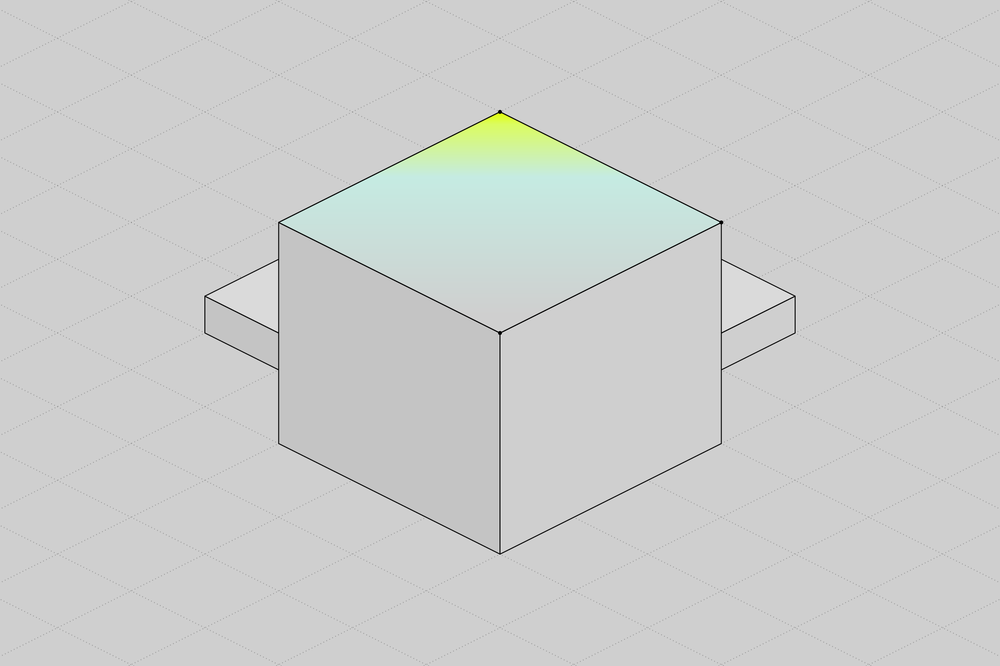
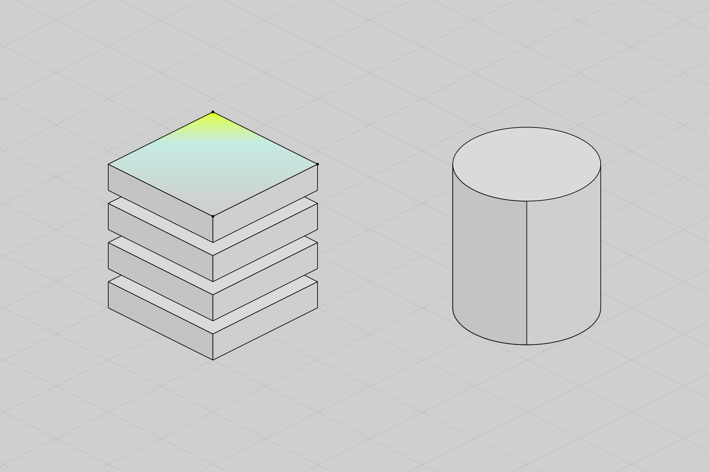
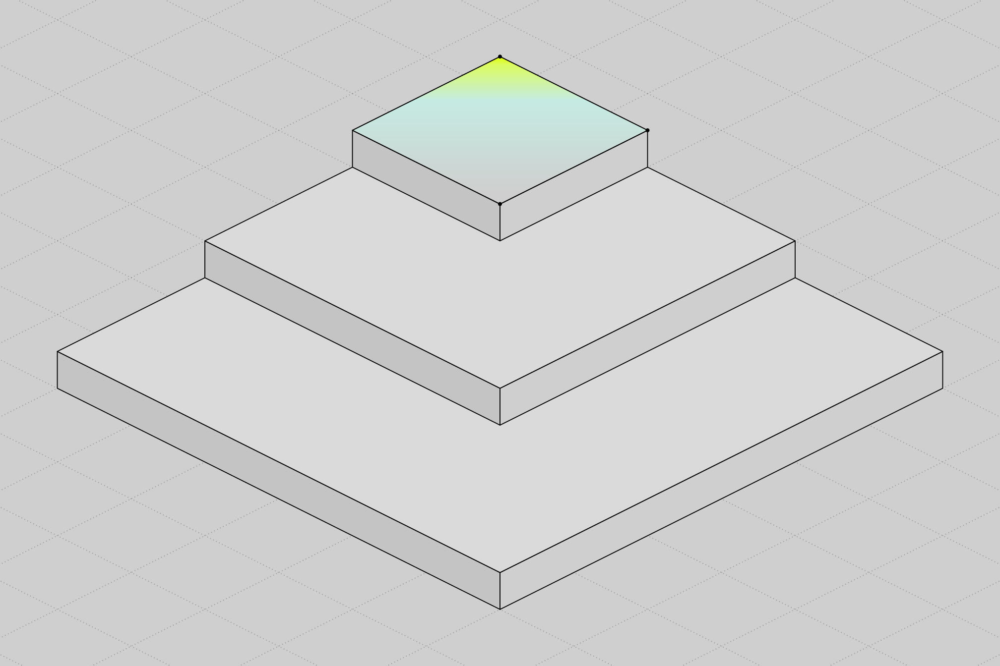
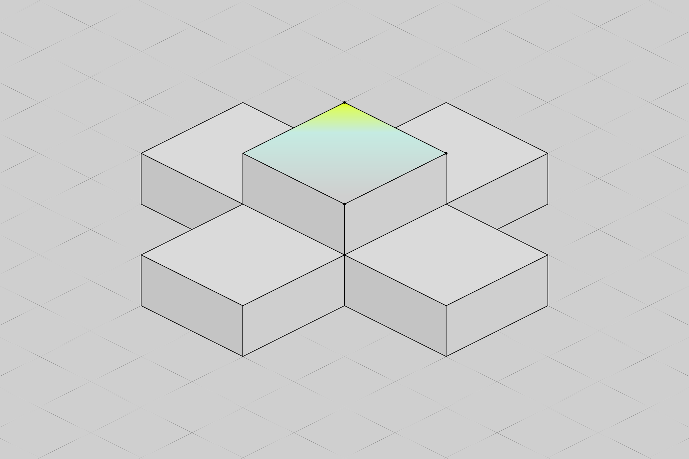

News
Themen
4Beiträge
10
KI-Kennzeichnung: Was der AI Act jetzt verlangt
Drei Milliarden für ein Netz, das es so nicht gibt: Was Redispatch kostet und wer dafür zahlt
KI im Netzbetrieb: Wie LLM-Cluster gegen den unkontrollierten Datenabfluss helfen – und was noch kommt
Gastbeitrag: KI ist Notwendigkeit für die effiziente Produktion von Wasserstoff
Batteriespeicher als Flexibilitäts-Asset: Warum die Zeiten der reinen PV-Anlagen vorbei sind

Wie wir mit Digitalisierung im Verteilnetz weniger abregeln und mehr leisten können
Databricks vs. Snowflake: Welche Datenplattform passt zu welchem Projekt?
Predictive Maintenance für kommunale Energieversorger: Mit vertikaler Datenintegration handlungsfähig bleiben
Wie die Bodenseeregion von vernetzten Datenplattformen profitieren kann